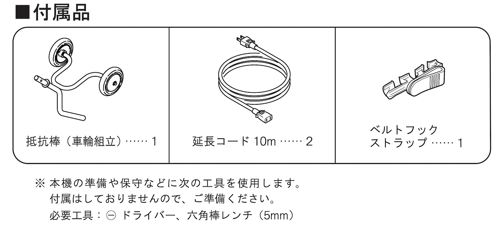
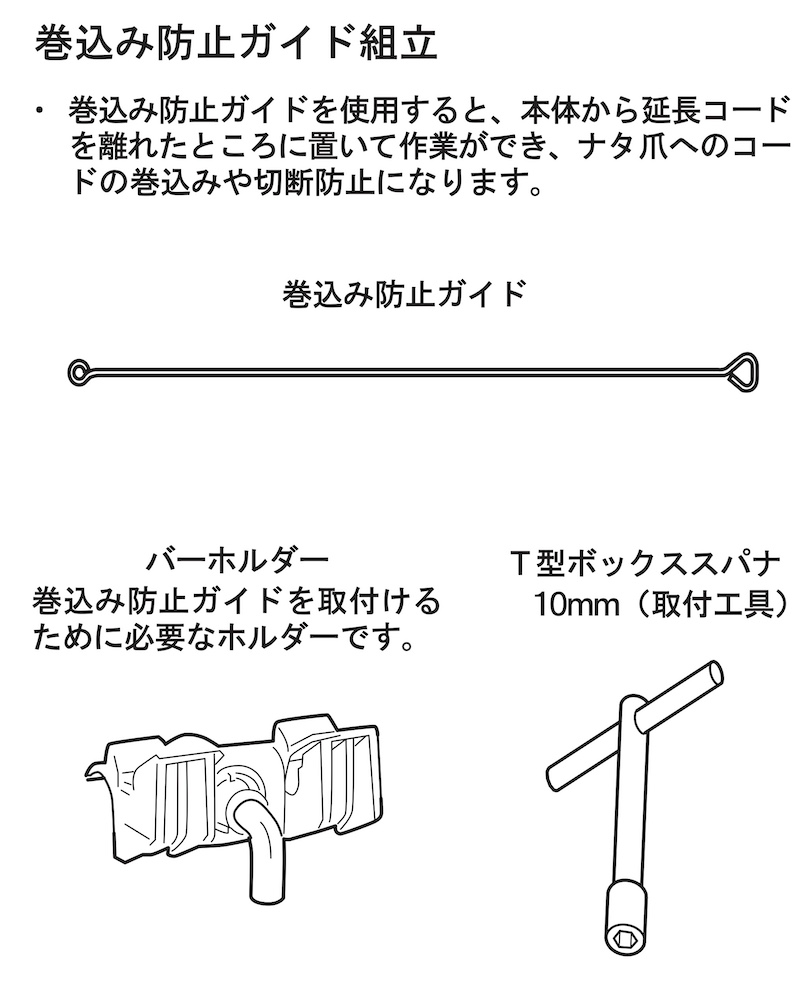
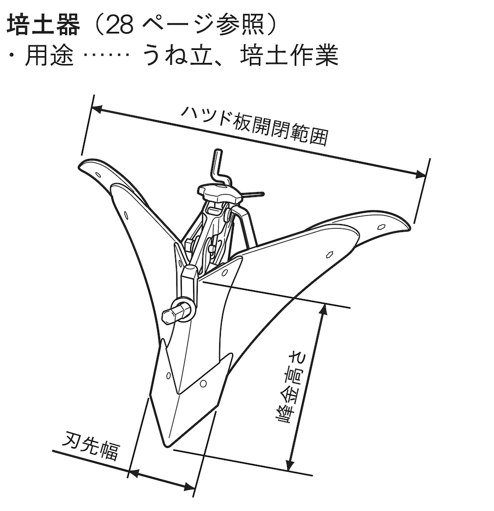
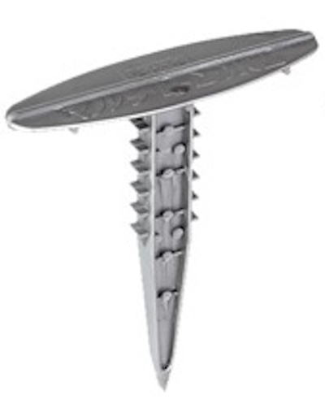

はじめに
前畑の一部（電動カルチベーターが届く範囲）の「土地管理（土壌改良）」に関して、電動カルチベーターによる「耕運（田おこし）」及び「畝立て」、畝への肥料等の「施肥」、最後に、穴あきマルチによる「マルチ被覆」を行っているので、その手順や注意事項について、特記したい。
「１」耕運（田おこし）
使用機器
- 京セラ電気耕うん機（カルチベーター）ACV-1500
- 巻き込み防止ガイド（別売品）
- バーホルダー（別売品）
- 30mリールコード（別途購入）
- 10m延長コード（付属品）
- ベルトフックストラップ（付属品）

使用方法
- 電動ですので、30mリールコード、付属の10m延長コードをセットします
- バーホルダーに「巻き込み防止ガイド」をセットし、10mコードに付けてある「ベルトフックストラップ」を「巻き込み防止ガイド」の輪ッカに装着すること
- 除草等を行った後、畑地を耕します。なお、車輪から「抵抗棒」にセットし直して、充分に耕うんします。
- 二、三回、往復することで、綺麗に、ふかふかに耕すことができます。

「２」畝立て
使用機器等
- 京セラ電気耕うん機（カルチベーター）ACV-1500
- 培土器（別売品：畝立て器）

使用方法
- 「畝立て器」を「抵抗棒」と付け替えます
- 充分に耕うんした畑地で、「畝立て器」を使って畝を立てます
- 畝については、「少し広めの畝（頂 50cm）」とすると良いでしょう
- 「畝と畝の間」は、広めにとり、次の「マルチ被覆」の時に土押さえの分を確保すると良いでしょう
「３」肥料等の施肥
肥料の配合（畝幅25cmとして４Mで１m3当たり）
| 成分 | 畝４毎に必要な量(g) |
|---|---|
| 鶏糞ペレット | 2,000 g |
| 苦土石灰 | 100 g |
| 化学肥料C | 100 g |
| 過リン酸石灰 | 30 g |
- 「畝」４M毎に、(１)鶏糞ペレットを散布、(２)苦土石灰／化学肥料／過リン酸石灰の混合を散布します。
- 畝の上を「カルチベーター（車輪付き）」で軽く耕し土と混合します。
「４」マルチ被覆
- 畝の表面を平らにします。（この時、草、特に、球根付き雑草は取り除くことが後の雑草抑制のために重要！！）
- 「マルチ抑え」(↓）で、抑えながら、マルチシートを被せます。
- 畝下のマルチに、「ヒラ鍬」で土を被せて、マルチシートの飛散を防止します。
（マルチ完成！）

「５」その他注意事項
(1) 植え付けについて
- マルチの穴を少し掘って、少量の化学肥料を散布します。
- 土と軽く混合します。
- 「苗」を起き、肥料が必要な野菜なら、「野菜果樹用腐葉土」で周囲を覆います。肥料があまりいらない野菜（さつまいもや玉ねぎなど）は「畑土」で、マルチ穴を覆います。マルチ穴を塞いで、マルチシートの飛散を防止します。
- 周囲を強く圧縮して、畝土との隙間を無くします。
- 充分に水やりをします。
参考文献
- KYOCERA：電気カルチベータ（耕うん機）取扱説明書 ACV-1500
- 厚生労働省：健康〇〇指針